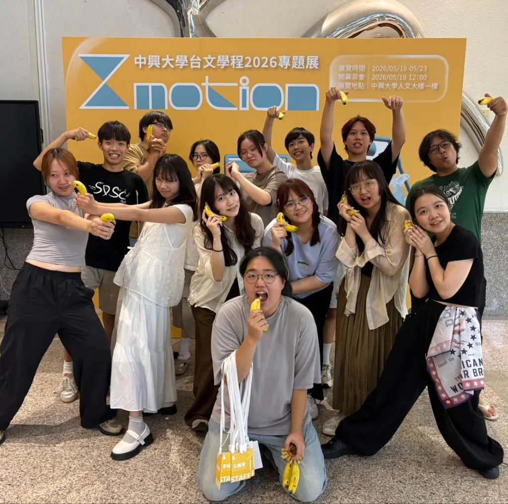
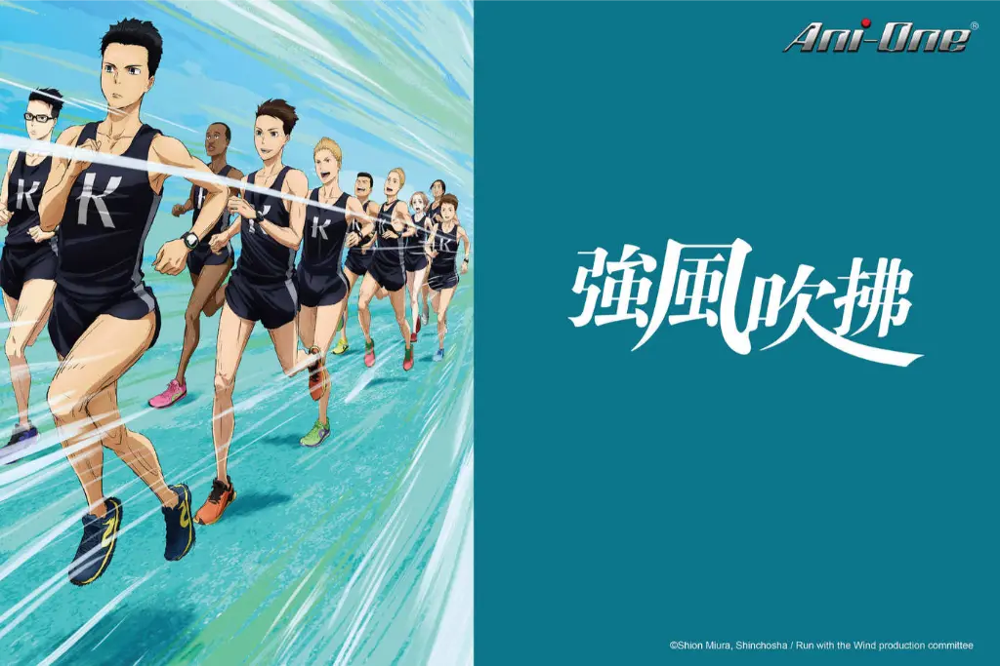
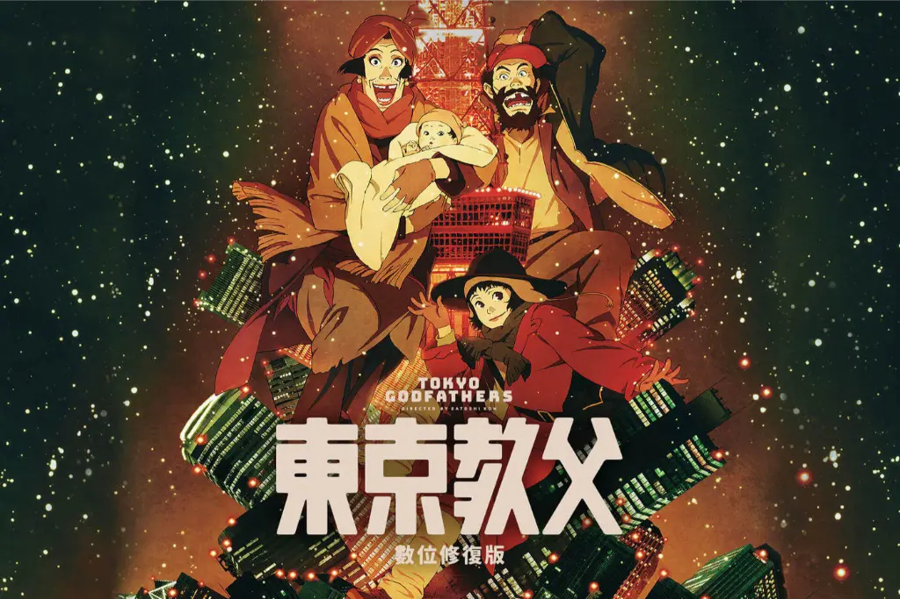
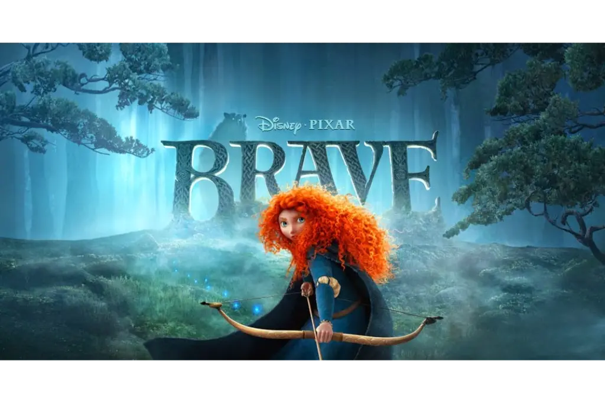

目前就讀台灣人文學士學位學程
在這裡獲得了很不一樣的學習，以及認識一群可愛認真的人們
專業學習
開拓與扎根深厚的台灣文學與歷史視野，養成敏銳的人文思辨力，並學習將核心文本轉譯為大眾媒介的當代敘事。
活動參與
在學期間參與各項大小活動，經歷許多從零到一百實踐的過程，培養不同面向與能力上的認知及技能。
不設限的可能
擁抱大學珍貴的開放性與包容氣氛，不為自己的人生設限，享受純粹摸索與解鎖新技能的快樂。
林家花園的林家 汶萊的汶

在這裡獲得了很不一樣的學習，以及認識一群可愛認真的人們
開拓與扎根深厚的台灣文學與歷史視野，養成敏銳的人文思辨力，並學習將核心文本轉譯為大眾媒介的當代敘事。
在學期間參與各項大小活動，經歷許多從零到一百實踐的過程，培養不同面向與能力上的認知及技能。
擁抱大學珍貴的開放性與包容氣氛，不為自己的人生設限，享受純粹摸索與解鎖新技能的快樂。
涉略的領域很多，但基於一天只有24小時，我對每個興趣都僅是喜歡而非專精
每個特質都很極致，過於極端值的一個人
基因中自帶酒精濃度，任何時候都像有喝酒一樣微醺，過於好動跟精力旺盛，狀態很常起太高，適合跟狗狗一起出門跑三圈
什麼話題都能聊兩三句，接球大師，比任何人都怕有話掉在地上，會盡力接起每個人的話題，以排球來說就是自由球員
敏感肌專人，對微小事物或情緒變化較能敏銳察覺，所以很常內耗，但也因此能成為一個共情能力強的人
賴以團體生活為主的，非常喜歡團隊合作，很容易掉線，但持續努力在團體中找到自己的位置
究竟在別人眼中會看到哪些這個人的習性呢
眾口難調，但我還是要推薦我一小部分的經典口袋名單

十人箱根驛傳見證跑步與青春的真諦
排球是永遠向上看的運動！
困在潮聲與陰影中的孤島
用無數次死亡輪迴撕開夏日的祕密
人們用各自的語言溝通
並且相互以不同的速度向彼此靠近
無論病患是誰，無論如何都要救活他

聖誕夜撿到棄嬰的垃圾堆三人組
在荒荒緲緲的東京街頭撞見奇蹟

紅髮公主追求獨立自我，冒險破除魔法代價
一名中二少年在經歷車禍瀕死後獲得超能力
能看見人們執念化為的各種人形妖怪
綁架犯與人質竟步上共同逃亡之旅
以下附上我的各項聯絡資訊，歡迎於在線時間聯絡我
請細心留意以下資訊，避免失效聯絡
台中市南區中興大學 人文大樓
jlin07092@gmail.com
(04)2287 3181
Monday-Friday: 10PM - 3AM
您可以於此留言區留下您想說的話或問題
{kind=link}
{kind=link}
{kind=link}
{kind=link}
{kind=link}
{kind=link}
{kind=link}
{kind=link}
{kind=link}